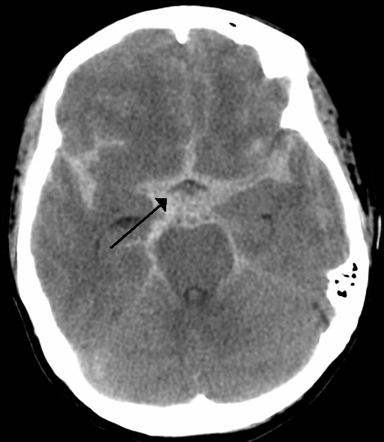
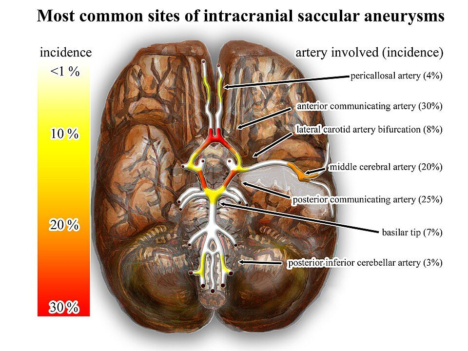

Información divulgativa. No sustituye la valoración de un profesional sanitario. Ante síntomas neurológicos bruscos (boca torcida, debilidad de un lado, dificultad para hablar) llama al 112.


Qué es
La hemorragia subaracnoidea es un sangrado en el espacio que rodea el cerebro, entre las meninges. Dejando aparte los traumatismos, en ocho de cada diez casos se debe a la rotura de un aneurisma: una dilatación en forma de globo de una arteria del polígono de Willis.
Entre un 2 y un 3 % de los adultos tiene un aneurisma cerebral sin saberlo; la gran mayoría nunca se rompe.


Síntomas
- Cefalea en trueno: un dolor de cabeza explosivo que alcanza su máximo en segundos o en menos de un minuto. Muchos pacientes lo describen como «el peor de mi vida».
- Náuseas, vómitos, rigidez de nuca, molestia con la luz.
- Pérdida de conocimiento, convulsiones o confusión.
Acude a urgencias: un dolor de cabeza súbito y muy intenso es una urgencia aunque luego mejore. Llama al 112.
Diagnóstico
La TC detecta casi todas las hemorragias si se hace en las primeras horas. Si es normal y la sospecha persiste, se hace una punción lumbar. La angio-TC o la angiografía localizan el aneurisma.
Tratamiento
El aneurisma roto se cierra lo antes posible para evitar un nuevo sangrado, que es muy grave:
- Embolización endovascular: se rellena el aneurisma con espirales metálicas (coils) a través de un catéter. Es la opción más usada.
- Clipaje quirúrgico: se coloca una pinza en el cuello del aneurisma.
Además se usa nimodipino y se vigila el vasoespasmo (estrechamiento de las arterias) y la hidrocefalia en las semanas siguientes.
Aneurismas no rotos
Cuando se descubre un aneurisma por casualidad, la decisión de tratarlo depende de su tamaño, forma y localización, la edad y otros factores. Muchos solo se vigilan. Controlar la tensión arterial y dejar de fumar reduce el riesgo de crecimiento y rotura.
Historia · Medicapedia
La historia de esta enfermedad
Cómo se describió, quién la estudió y cómo ha cambiado su tratamiento a lo largo de los siglos, en Medicapedia, nuestra enciclopedia hermana de historia de la medicina.
Fuentes
- Hoh BL, et al. 2023 Guideline for the management of patients with aneurysmal subarachnoid hemorrhage. Stroke. 2023;54:e314-e370. doi:10.1161/STR.0000000000000436.
- NINDS. Cerebral aneurysms.
- MedlinePlus. Aneurisma cerebral.